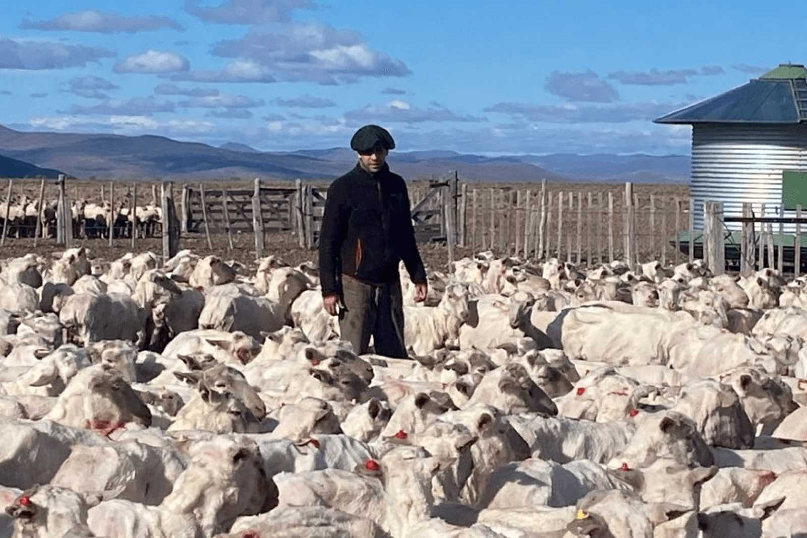

GASTRONOMÍA
La gastronomía en Cordillera es un reflejo de la rica herencia cultural y natural del país, destacándose por su combinación de sabores tradicionales y el uso de ingredientes autóctonos.
Aquí, la comida se basa en recetas tradicionales, especialmente los platos como el chipa guasú o la sopa paraguaya, transmitidas de generación en generación, lo que la convierte en una experiencia única y auténtica.
LOCALES GASTRONÓMICOS
ARTESANÍA
La artesanía en Cordillera, es una expresión vibrante de la cultura y las tradiciones del país, reconocida por su calidad y belleza tanto en el ámbito nacional como internacional.
Los artesanos de la Cordillera utilizan materiales locales y técnicas tradicionales, transmitidas de generación en generación, lo que hace que cada pieza sea única y tenga un significado cultural profundo.
ECONOMÍA
La economía en Cordillera es principalmente la agricultura, la ganadería y el comercio. La zona es conocida por su producción de cultivos como la soja, el maíz y el trigo. Además, la región cuenta con recursos naturales, como bosques que se aprovechan para la producción de madera y otros productos forestales.
